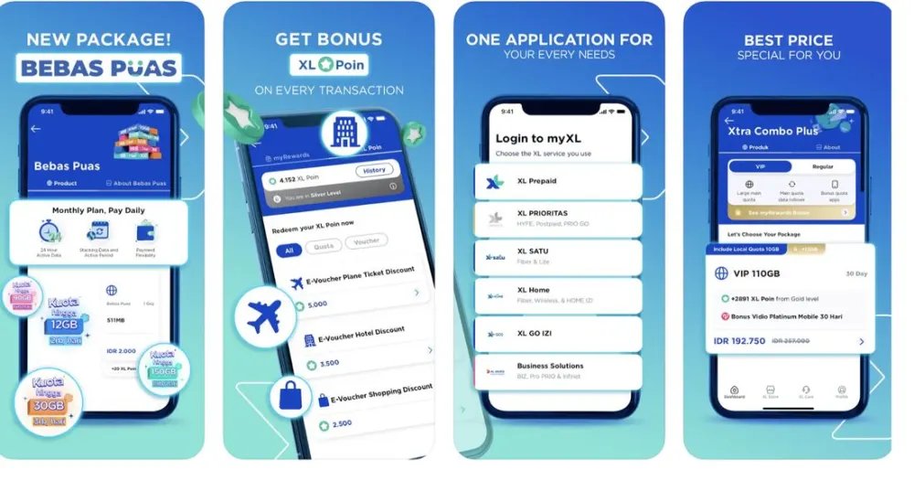
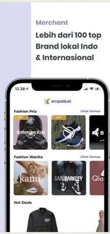
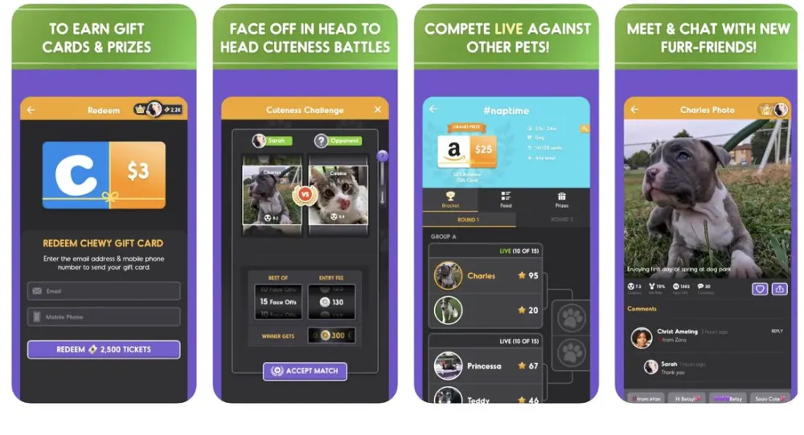
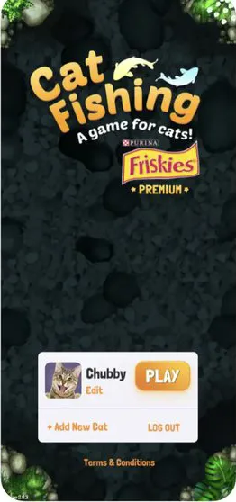
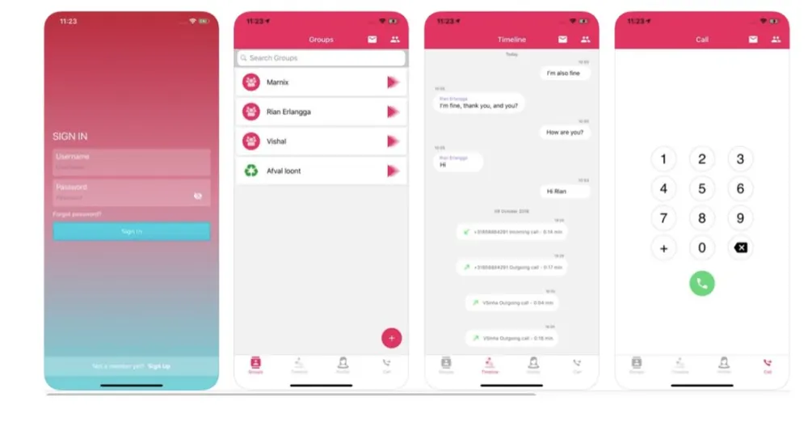
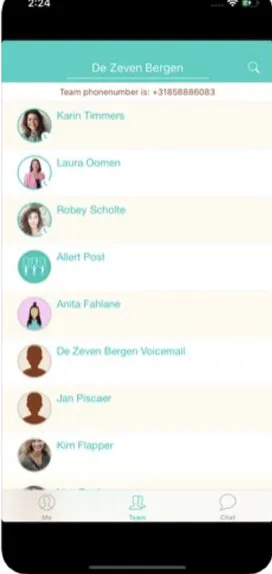
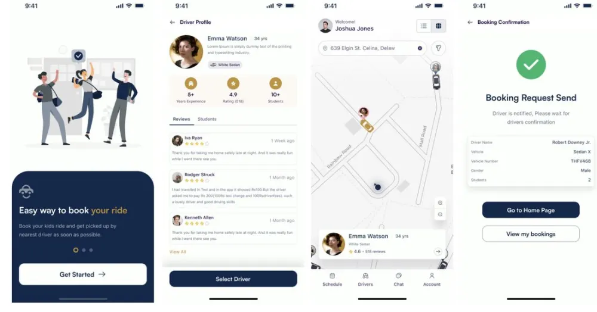
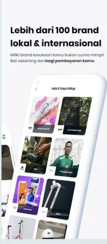

Built for Apple’s ecosystemDibangun untuk ekosistem Apple
9 years deep in Swift, UIKit, and everything in between.9 tahun mendalami Swift, UIKit, dan seluruh ekosistemnya.
Apps I’ve shippedAplikasi yang telah saya rilis
From fintech to telco, real products, real users across Indonesia.Dari fintech hingga telko, produk nyata, pengguna nyata di seluruh Indonesia.
















12 years of mobile12 tahun di industri mobile
From Android roots to Apple expertise, based in Jakarta, serving clients across Indonesia.Dari akar Android hingga keahlian Apple, berbasis di Jakarta, melayani klien di seluruh Indonesia.
PresentSekarang
Jun 2021
Sep 2020
Sep 2019
Dec 2016
May 2015
Have an iOS idea?Punya ide aplikasi iOS?
Freelance iOS Developer available for projects in Jakarta, Bandung, and across Indonesia, as well as remote worldwide. Whether it’s a new app or an existing product that needs care, let’s talk.iOS Developer freelance tersedia untuk proyek di Jakarta, Bandung, dan seluruh Indonesia, serta remote ke seluruh dunia. Baik aplikasi baru maupun produk yang sudah ada, mari kita diskusikan.